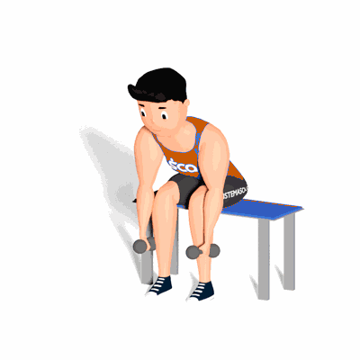

Crucifixo Inverso

O exercício trabalha a musculatura do trapézio, na face superior, medial e inferior. Indicado também para a musculatura de Romboides, maiores e menores.
Ficha Técnica
Tipo: Musculação
Grupo Muscular: Costas
Aparelho: Nenhum
Músculos: Nenhum
Como realizar
- Sente em um banco;
- Pés juntos, realize uma inclinação do tronco mantendo cabeça e costas alinhadas;
- Mantenha também, as curvaturas naturais e fisiológicas da coluna vertebral preservadas;
- Posicione os braços estendidos ao lado das pernas e cotovelos semiflexionados;
- Realize o movimento de abdução transversal dos ombros, elevando os braços em lateral ao corpo;
- Retorne lentamente à posição inicial e repita os movimentos.
 RC STORE
RC STORE